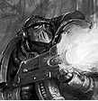
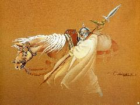

Forums galactiques > Assemblée Galactique : diplomatie officielle > Le Début de la Fin
Pages : 1 2
| Necromancien Respect diplomatique : 50  19/03 ETU 00:21 | Score : 14 Détails
Alors que les commandants palabraient toujours sur des futilités, l'écran mural central de l'Assemblée scintilla. L’image tout d’abord brouillée, s’éclaircit peu à peu et dévoila le visage d’un commandant jusqu’alors inconnu. Nul ne pouvait voir son visage et sa voix n’exprimait aucune émotion… « Messieurs les Greffiers Galactiques, moll…Commandants, Commandantes, mes futures victimes, Personne ici ne me connaît, du moins pour le moment, et les seules personnes qui ont pu me connaître ont rejoins leurs ancêtres. Ce jour marque le début d’une nouvelle ère … Aujourd’hui, les Enfers se sont réveillés … Avant tout, je vais me présenter à vous faibles humains. Necromancien, membre des Maiar, de la race des Ainur, représentant des Enfers Abyssales, chef des Armées Noire et votre bourreau. » Alors que Necromancien continuait son discours, on pu voir derrière lui de nombreuses ogives hyperatomiques partir, suivies de prêts par des centaines de millions de kamikazes. « Voyez ce spectacle magnifique … La destruction, la souffrance, la peur et le désespoir … voici ce qui vous attend à partir d’aujourd’hui. J’entends déjà gindre vos femmes et enfants. La lutte est vaine. » L’ensemble des commandants présents pu assister aux premières explosions hyperatomiques puis quelques instants après les kamikazes prirent le contrôle de systèmes galactiques entiers. « N’ayez crainte, votre tour viendra bien assez vite. Mais vous allez me demander pourquoi une telle violence ? Je vous réponds cela : mon Maître en a assez de vous, vous les mollusques incapables. Il m’a envoyé vous montrer la voie… la voie de la rédemption pour vos âmes pourrit par les attitudes de bisounours que vos chefs Résistants ont depuis toujours. » A ce moment là, un souffle glacial parcouru l’Assemblée … Les portes de la salle s’ouvrirent violemment et les commandants purent voir une personne rentrer habillée d’une cape blanche à capuchon le recouvrant totalement. Personne ne pouvait apercevoir son visage. En avait-il un ? Necromancien poursuivit son discours : « Pile à l’heure … Commandants, Commandantes, voici mon représentant, Annatar, il siègera parmi vous afin de recueillir vos doléances, remarques et plaintes. Des plaintes, il risque d’y en avoir. Il fera le tri et me transmettra ce qu’il jugera nécessaire… » Les commandants purent apercevoir un homme, enfin une chose, s’approcher de Necromancien et lui murmurer à l’oreille … « - Maître, veuillez m’excuser de cette interruption mais nous avons les premiers résultats de l’attaque d’aujourd’hui …. - Dit chien ! - Réussite totale, aucune résistance, toute vie a été anéanti, mon Maître, - Parfait, passez à la phase 2 de l’opération … - A vos ordres, mon Seigneur. » « Vous venez de faire connaissance avec mon second Khamûl, chef des Úlairi. Vous apprendrez à vos dépend à le connaître. Commandants, Commandantes, Votre fin est proche…Acceptez-la et votre souffrance sera brève … Résistez et vous subirez mille tourments pour avoir résisté à la volonté de notre Maître à tous … Pour notre Grand Maître à tous, Pour la Grandeur des Enfers, Ash nazg durbatulûk, ash nazg gimbatul, ash nazg thrakatulûk agh burzum-ishi krimpatul.» La communication s’interrompu après ces mots dans une langue inconnue de tous … Tous non, une personne dans la salle savait ce que cela signifier. Les regards se tournèrent petit à petit vers Annatar, ils cherchaient à distinguer son visage mais en vain. Annatar se leva et pris la parole sans même demander l’autorisation … « Futures victimes, Comme mon Maître vous l’a dis vous devez faire un choix désormais. Vous devez choisir entre la vie ou la mort. D’ici quelques jours mon Maître vous recontactera afin de vous exposer les conditions nécessaires à votre survie. D’ici là, un conseil, faites vous petit pour que la fureur de mon Maître ne se déchaine pas sur vos terres … Maintenant, je suis prêt à répondre à vos questions, enfin celle que je jugerai bonne. Réfléchissez bien … » Sur ces paroles Annatar se rassit et attendit les premières réactions qui ne furent pas longue à arriver à la vue du massacre perpétré par les Armées Noires. La consternation des commandants était sans précédant et nombreux se demandaient s’ils allaient voir la lumière du jour encore longtemps. | ||
| Kel SIRHAS Respect diplomatique : 13  19/03 ETU 10:01 | Score : 2 Détails Commandants,
Il semblerait que dans le grand jeu de la conquète galactique et de la guerre éternelle, vous désiriez vous immiscer. J'admire votre force et votre volonté d'agir et de provoquer un changement dans l'ordre établi. Je serais ravi de vous rencontrer et de palabrer avec vous de vos actes et de vos ambitions. Qui sait, il est possible que nous nous entendions. K'el Sirhas | ||
| Ios Respect diplomatique : 93  19/03 ETU 10:25 | Score : 2 Détails Lucifer fit un nouvelle apparition à l'Assemblée.
"Necromancien, tu les vois comme moi, les petites choses qui te demande grace pour ne pas disparaître ! Ahahahahaha [rire sarcastique] ! Les mortels ne comprennent pas la nécessité de leur destruction pour la suprématie du Chaos ! Commandant Kel SIRHAS, je crains que votre fin soit plus proche que vous ne le pensiez !" Sur ces mots, Lucifer retourna à ses occupations. | ||
| Kel SIRHAS Respect diplomatique : 13 19/03 ETU 10:34 | Score : 2 Détails La fin ? Si seulement il pouvait y avoir une fin. Il y aura toujours des empires à faire s'effondrer, des populations à asservir.
La guerre ne connait pas de fin. | ||
| Ios Respect diplomatique : 93 19/03 ETU 10:37 | Score : 2 Détails Lucifer se mis à rire au vu de cette déclaration, qu'il jugeait risible :
"Ahahahahahahahahah ! Commandant, je n'ai jamais parlé de la fin de la guerre, mais de votre fin à vous. Pourquoi mettre fin aux bains de sang, à la douleur et à la souffrance ? Pour vivre chacun dans son coin, dire bonjour à son voisin de temps en temps ? Dans ce cas là, il ne sert à rien de développer une flotte guerrière !" | ||
| chrome Respect diplomatique : 9  19/03 ETU 17:36 | Score : 2 Détails Telle une furie,le commandant Chrome se leva de son banc et menaçant Ios de son épée,lui dit:
"Cessez vos rires grotesques au sain de cette assemblée,petite raclure Keviene,et priez pour qu'un jour ceux ci ne deviennent pas des râles d'agonie." Il se rassit et serra le manche de son épée | ||
| Morcar Baughlir Respect diplomatique : 60  19/03 ETU 21:17 | Score : 2 Détails Une rire un peu scénile se fît entendre dans la salle...
Le vieux Morcar Baughlir, sur le ton de la bonne blague du jour, prit la parole : "Héhéhé... Excusez-moi, mais... Vous avez réussi à prendre 5 planètes, à en perdre un bonne moitié par insurrection, et vous trouvez le moyen de venir vous en vanter sur l'assemblée ? On ne peux pas vraiment parler de coup d'éclat..." Prenant un air plus sérieux, le vieillard repris d'une voix beaucoup plus dure : "Je vous propose un choix : Ou vous prenez tout de suite la porte de sortie, ou bien je me fait un plaisir de vous l'indiquer. Pas de négociation avec les terroristes." Il reprit sa voix malicieuse : "Je pourrais même cesser d'ennuyer se pauvre Kel SIRHAS qui a eu la dévaine de croire qu'il pourrait s'en prendre à moi sans dommage... Halala, cette jeunesse, pourquoi faut-il qu'elle soit toujours aussi sûre d'elle alors qu'elle n'a pas la moindre expérience..." | ||
| promethe Respect diplomatique : 110 19/03 ETU 22:40 | Score : 3 Détails La fin est effectivement proche commandant, mais plutot pour vous.
Vous avez voulu être trop gourmand, et vous allez le payer...cher. D'ailleurs, je vous est déjà envoyé un accompte, et vous ne conserverez pas longtemps ce que vous avez pris. Promethe | ||
| Thâois Respect diplomatique : 582  19/03 ETU 23:16 | Score : 1 Détails Tiens le Chrome a enfin trouvé le chemin de ma Taverne..il était temps... à moi maintenant d'aller trouver le sien...
Et mon cher Promethe, rangez donc ce sabre, vous allez finir par vous blésser.. | ||
| chrome Respect diplomatique : 9 20/03 ETU 00:20 | Score : 4 Détails Beaucoup de promesses et peu d'action cher Thaos.
Il est vrai que porter un marteau qui fait 3 fois votre poids n'améliore pas votre mobilité. | ||
| Salverius Respect diplomatique : 169 20/03 ETU 09:38  | Score : 2 Détails "C'est sur mon cher Chrome" repris le commandant Salverius
"D'ailleurs, quelqu'un l'a-t-il déja vu bouger de son trône? Thaoïs, la possession du pouvoir vous aurait-elle entraîner vers la sénilité? Je pense que des vacances vous feraient le plus grand bien" | ||
| Thâois Respect diplomatique : 582 20/03 ETU 10:18 | Score : 4 Détails Mais je suis en vacance mon cher Salverius... du moins, moi je ne suis pas en guerre même si du haut d'une de mes fenêtre, je vois vos cartingue de vaisseaux devant mes planetes, .... nul problème, j'ai ouvert un dépot de piece détaché, regardez par vous même le nouvel arrivage
#################################### Vous avez subi une invasion de la part du commandant « Seb@ » sur votre planète « La Taverne Naine » (système 0). La tentative ennemie d'attaquer par surprise a échoué. Votre défense s'est organisée merveilleusement. Vos défenses ont infligé des pertes à l'ennemi, qui a perdu 28126 unités. ####################################### Il est vrai, je sais pas qui sait mais il est bien aimable... Thâois se retourna pour voir Chrome le scelerat Chrome, il est vrai que de votre systeme fermé, vous devez vous ennuyer.. mais il est sur d'une chose, il est mieux pour vous que pour moi que nos chemin ne se croisent pas... et vous savez, j'ai toujours toutes mes planetes.... et toutes mes flottes .. ah les systemes ouverts, le bon air frais, y a que ça de vrai car ça doit sentir un peu le phoque chez vous, ouvrez donc vos fenêtres pour y faire entrer l'air pur.. et moi avec bien sur | ||
| chrome Respect diplomatique : 9 20/03 ETU 12:12 | Score : 1 Détails Chrome se leva et prit la parole:
"M'ennuyer ? Moi ? Pensez vous . J'ai des rapports constants sur l'état de pourriture avancée de votre petit royaume qui oscille entre 70 et 90 planètes et vos stocks de leems qui quoiqu'importants,n'atteignent à peine 500.000 milliards en stagnation constante depuis plusieurs jours. Alors effectivement,pour éviter vos mauvaises odeurs et pour vous voir piailler d'impatience à l'idée de m'envahir,je garde mon système fermé.ha ha ha Quel beau nain vous faites ! " Il se rassit calmement | ||
| Thâois Respect diplomatique : 582 20/03 ETU 12:40 | Score : 4 Détails Ah bah ça pour une nouvelle... je ne vois pas comment mes planetes pourraient stagner entre 70 et 90, soit un écart type de 25% alors que je n'attaque personne.... (donc pas de gain) et que je n'en perds aucune (donc pas de chute)
Vous devriez apprendre à lire un compte rendu, je crois que l'odeur noseabonde de votre foutoir incommensurable (car doit en avoir des bestioles à l'interieur) ne vous monte à la tête.. Allez encore un chiffre... juste pour que vous arretiez de déblaterer n'impote quoi 11.079.844.274.400.000 ( je mets les . pour vous faciliter la comprehension... je ne vous dirais pas se que represente ce nombre, vous avez vos comptes rendus...) Un conseil, restez dans votre foutoir et arretez de polluer le mien | ||
| chrome Respect diplomatique : 9 20/03 ETU 14:05 | Score : 5 Détails Chrome se releva de nouveau,esquissa un léger sourire et répondit:
"Mais mon petit bonhomme,quand on titille les autres,il faut accepter que les autres vous titillent aussi.. A moins que vos milliards ne vous fassent perdre la tête..Ne vous imaginez pas plus haut que vous ne l'êtes.Ou bien investissez dans des échasses." Il regarda avec un air de compassion ce petit être hirsute gesticuler sur son tronc:ses membres difformes s'agitaient avec maladresse et son visage ingrat et boursouflé baragouinait de colère. Chrome songea que Dame Nature n'avait pas été très tendre avec cette demie portion;puis il se rassit | ||
| Thâois Respect diplomatique : 582 21/03 ETU 03:36 | Score : 3 Détails Entre titiller sur des faits réels et raconter des elucubrations plus grosse que le pustule pointant sur le bout de votre nez, il y a une différence
Moi je ne vais pas énoncer,... Chrome n'a que 1.OOO Ma de leem... et 5OMo de chiffre d'affaire jour, même si je ne suis pas très loin de la vérité.. Je pourrais continuer par dire.. Chrome oscille entre 2O et 2O planetes via les insurections dans son systeme fermé... Des blasfemes, il y en a plein mais encore faudrait il que les votres soient un tantinet proche de la vérité... Et sur la question de mes membres disproportionnés.. ils ne le sont pas tous... Dame Nature a été plutôt généreuse | ||
| Wilkfried Respect diplomatique : -19 21/03 ETU 11:38 | Score : 3 Détails Un commandant se leva du fond de la salle et tous le monde se tourna vers lui. Il n'était encore connu de personne.
"Commandants, ne détournez pas le sujet. Pour revenir au sujet principal, je trouve que répandre la discorde et le chaos dans la galaxie est une idée plutot interessante. Nous attendons de voir les résultats" Il se rassit et replongea dans l'ombre. | ||
| Apophilias Respect diplomatique : 25 21/03 ETU 16:18 | Score : 1 Détails Commandant Thaois, j'aimerais m'entretenir avec vous d'un sujet me préoccupant.
Voyez vous, mon système est encore fermé mais je peux dévelloper la technologie d'hyperfusion. Vous allez me demander dans quel but. Et bien figurez vous que je suis obligé de cohabiter avec un moustique fort désagréable qui s'est taillé la part du lion en occupant la moitié du système. Je requiert ainsi votre sollicitude pour lui botter le train... Et me permettre ensuite d'occuper ses ex-planètes... Y verriez vous quelconque inconvénient? | ||
| Thâois Respect diplomatique : 582 21/03 ETU 18:58 | Score : 0 Détails Envoyez moi une missive en privée, je verrais pas la suite avec de plus ample informations sur le sujet
| ||
| Connan Respect diplomatique : 0  21/03 ETU 19:42 | Score : 1 Détails "connan entendit la conversation et les interpella en disant"
dites commandant Apophilias, mes respects je suis le commandant Connan du système d'Eurondia, je vous ai entendu parler de projet d'alliance pour attaquer un autre commandant. je pense qu'il serait sage d'essayer de tenir une conversation avec lui ou essayer de faire une proposition et si vous l'attaquiez quand m^me je pense que l'assemblée devrait être au courant de votre entreprise un homme averti en vaut deux "connan finit avec cette hélocution et repartit de son coté sous l'oeil froid du commandant surpris par l'agitateur" |
Pages : 1 2
Forums galactiques > Assemblée Galactique : diplomatie officielle > Le Début de la Fin